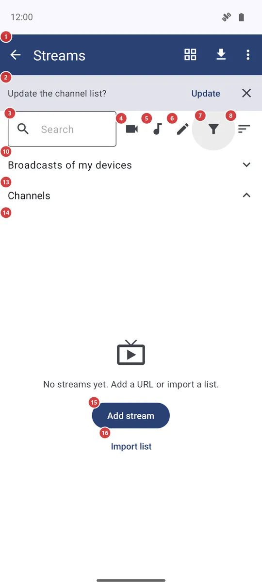
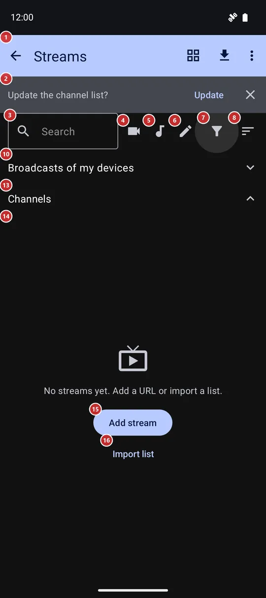

Streams
What this is for
Streams is your list of internet radio stations, TV channels and cameras. Add a stream by its address, bring in the built-in catalog or a ready playlist, find a channel and play it - radio plays right on this screen, video opens in the full-screen player.


In this order
- Open Streams from the programs in the resource list. While the list is empty, Add stream 15 takes the address of one station or channel, and Import list 16 brings in a ready list.
- To fill the list with the built-in catalog, press Import catalog 23 in the toolbar. The banner 2 may offer the same update when you open the screen.
- Find a channel: type a few letters into Search 3, tap the video, audio or own-streams button (4, 5, 6), or open Filter 7 for category, topic, language and country. Collections 9 are hand-picked sets, shown when the catalog has them.
- Sort 8 sets the order, and the view button 22 switches between rows and tiles.
- Tap a channel in the list 14 to play it. Radio plays right here, with Stop 21 at the bottom; video opens in the full-screen player.
- Press and hold a channel to pin it. Pinned channels collect under Pinned 12 above Channels 13; tap a header to fold its section.
- Broadcasts of your other devices wait under 10. Refresh channel status 27 checks which channels answer, and Help 29 opens this page.
The elements
Toolbar, search and filters
1StreamsThe title bar: the way back, the view switch, the catalog import and the menu with the other commands.
The arrow, like the system Back, leaves the screen. If a station is still playing in the background, the app may first ask whether to stop it or let it play on, and it can remember your answer. On the right sit the grid or list switch, Import catalog and the three dots menu; they are described under Toolbar buttons and menu. In landscape the search field, the video, audio and own-streams buttons, Filter and Sort move up into this bar to give the list more height.
2Update the channel list?Offers to refresh the channel list from the built-in catalog.
The banner appears at the top only when Updating the channel list is set to Suggest when I open in the Streams section of Settings, and the last update was more than six hours ago or never happened. Update downloads the catalog; the close button dismisses the banner and changes nothing. It does not fade by itself, so you can answer when you are ready. Nothing is downloaded until you press Update.
3SearchNarrows the list as you type.
Type part of a channel name, topic or language and the rows narrow down at once; the cross at the end clears the field. The text is not remembered, so the field is empty each time you open Streams. Search works together with the filters below.
4Show video streams onlyShows only video channels, as tiles with picture previews.
Tap it to see the video channels that came from the catalog or an imported list; tap it again to bring everything back. Choosing it switches the list to tiles so that previews can show, and your earlier view returns when you leave this filter. Streams you added by hand are not counted here - they are under the own-streams button.
5Show audio streams onlyShows only radio and other audio channels.
Tap it to see the audio channels that came from the catalog or an imported list; tap it again to show everything. Streams you added by hand are under the own-streams button.
6Show manually added streams onlyShows only the streams you added by hand.
Handy when the catalog holds thousands of channels and you want your own few. Channels that came with an imported playlist do not count as your own. Tap it again to clear.
7FilterOpens the full set of filters: type, category, language, topic, country and pinned only.
The window has All, Audio, Video and Own at the top, then Category and Language, Topic (only when the catalog has topics) and Country. Each row opens a list you can search. Pinned only keeps just the channels you pinned. Choices apply at once; OK closes the window and Clear filters resets everything. While any filter is on, the icon changes to show it, and your choices are remembered for the next visit.
8SortChooses the order of the channels.
Pick By name, By topic, By language, By country or Recently added; the order is remembered. Pinned channels keep their own order in their own section, so Sort changes the Channels section. With a collection selected, a sort replaces the curator's order but keeps you inside the collection.
Channel lists
9Broadcasts of my devicesLive broadcasts of your other devices, folded away until you open it.
This section shows only while the phone is signed in to an exchange server (see My devices). It starts closed, and the app looks for broadcasts only while it is open, which saves traffic. Opening it first says Looking for broadcasts.. and then lists each one with its title, the device name and the mode: audio only, camera only, or camera and audio. Tap a broadcast to add it to your channels; a message says whether it was added, updated or was already there, and you then play it from the Channels list. A broadcast this version cannot play is marked as such.
10About broadcasts and castingOpens a page of the project website about broadcasts and casting.
The button shows only while the section above is open. The page opens in your browser and explains how to receive a broadcast from another device.
11PinnedYour pinned channels, kept at the top.
The section appears as soon as one channel is pinned and goes away when none is. Tap the header to fold it so the rest gets the whole screen, and tap again to unfold; folding is not remembered between visits. In this section the three dots menu of a channel also offers Move up, Move down and Move to top, so you set your own order. The watch lists these same channels first, and Watch stream pins in the Wear companion edits this very set.
12ChannelsAll the channels that are not pinned.
This section holds the catalog, imported lists and the streams you added. While some channels are pinned, tap the header to fold this section and give the pinned ones the whole screen. With nothing pinned the header does nothing.
13Channel listThe channels themselves - tap to play, hold to pin.
Each row shows the channel's logo or flag, its name and address, small marks for region lock, topic, country and language, and a status mark: a hollow ring means not played yet, a check means it played from here, an exclamation mark means the last try failed. Tap a row to play. Radio keeps playing on this screen with Stop at the bottom, and tapping the playing row again stops it; video opens in the full-screen player. With no network the app says so at once instead of waiting. If a station does not answer, a window offers Retry or Remove; when the phone is offline it only offers Retry.
Press and hold a row, or tap its pin icon, to pin or unpin it. The three dots on a row open more: add to favorites (when Favorites is on), add to the home screen, edit (for streams you added by hand), send to the watch or open on the watch (when the Wear companion is on), open in VR (for video channels with a headset connected), channel information, send the link and remove. In tile mode a tile does the same, with a pin badge and pin or unpin inside the menu. A right click with a mouse opens the same menu.
- Undo
- Remove asks first and takes the channel out of the list. There is no Undo: a catalog channel can come back with a later catalog update, but a stream you typed in stays gone until you add its address again.
14Add streamOpens the window where you type the address of a stream.
This message with its two buttons appears when the list has nothing to show - on the first visit, or when your search and filters match nothing. Add stream opens the same window as the command in the toolbar menu: the address, an optional title and optional language choices.
15Import listBrings in a whole list of channels at once.
It asks how: Import catalog downloads the built-in catalog, Import from URL takes the address of a playlist you already have. Both are also in the toolbar.
Scrolling and playback
16Scroll to topJumps to the first channel.
The four round buttons at the right edge belong to the Channels list and appear only when it is longer than the screen. This one shows once you have moved away from the top.
17Page upMoves the list one screenful up.
It appears together with Scroll to top, once you are not at the top of the list.
18Page downMoves the list one screenful down.
It shows while there are more channels below, and goes away at the end of the list.
19Scroll to bottomJumps to the last channel.
Useful in a long catalog when the list is sorted so that the channel you want comes last. It goes away when you are at the bottom.
20StopStops the radio that is playing on this screen.
A slim bar at the bottom appears while a station plays here. It shows the station name, and the song title when the station sends it. Stop ends playback; tapping the playing row does the same. With background playback on in Settings, the station can keep playing after you leave the screen.
Toolbar buttons and menu
21Grid view / List viewSwitches the lists between rows and tiles.
The button shows the view you get next: the grid icon while rows are on screen, the list icon while tiles are. Tiles show a picture for each channel - a live frame, a preview or a logo - and suit browsing video; rows leave more room for text. The pinned and main sections switch together, and your choice is remembered. In tile mode, pulling the list down refreshes the pictures of the visible tiles.
22Import catalogDownloads the built-in catalog of channels and adds it to your list.
It needs a network connection. When it finishes, a message tells how many channels were added, updated or removed. Right after an update the app may offer to download channel pictures and station logos; each is a separate extra download that you can decline. Streams you added or imported yourself are not changed by the catalog.
Add stream window
29Stream URL (http, https, rtsp)The address of the stream you want to add.
Type or paste an address that starts with http, https or rtsp - a radio station, a TV channel, a camera. The app guesses audio or video from the address; you can change it later in the Edit window of the channel. In Import list mode the same field takes the address of a playlist instead, and the window title says which of the two you are in. OK adds it, Cancel closes the window without saving.
30Title (optional)A name for the channel.
It is shown in the list in place of the address. If you leave it empty, the site name from the address is used. This field is in the Add stream and Edit windows only - an imported playlist brings its own names.
31Audio languageThe audio language this channel should start with.
Choose Default to follow the stream defaults from Settings, or English, Russian or Ukrainian for this channel only. It matters for channels that carry several audio tracks. The row is shown when you add one channel, not when you import a list.
32Subtitle languageThe subtitle language for this channel.
Choose Default to follow the stream defaults, or pick English, Russian or Ukrainian for this channel only. It works with the Subtitles row below.
33SubtitlesTurns subtitles on or off for this channel.
Default follows the stream defaults, On shows subtitles when the channel has them, and Off hides them. The choice belongs to the channel's address and is kept when you edit the channel.
Save to local copy sheet
34Save to local copy?A sheet in the player that offers to download a file instead of streaming it.
The player raises it when it judges that a file from a network share or a cloud folder will not play smoothly at the current speed. It lists the file size, the connection speed against the speed the file needs, how long the download would take, the free space on the phone and where the copy would go. When the free space is not enough, a warning appears and Save local copy is switched off. It concerns files of network and cloud resources rather than live internet channels.
35Save local copyDownloads the file to the phone and plays it from there.
A progress window shows the download and lets you cancel it. When it finishes, playback continues from the local copy and no longer needs the network. The button is off when the phone has no room for the file plus a tenth spare. When you leave the player, you may be asked whether to keep or delete the copy, unless the streaming cache setting already decides that.
- Undo
- Cancelling the download removes the partial file. The original on the server or in the cloud is never changed, and the local copy can be deleted when the player asks.
- Shortcut
- Enter
36Try anywayKeeps streaming as before.
Closes the sheet and carries on playing over the network. Expect pauses while the connection is slow. Nothing is downloaded or changed.
37CancelTurns the offer down.
Closes the sheet and carries on with streaming, the same as Try anyway. The system Back gesture or a tap outside the sheet does the same.